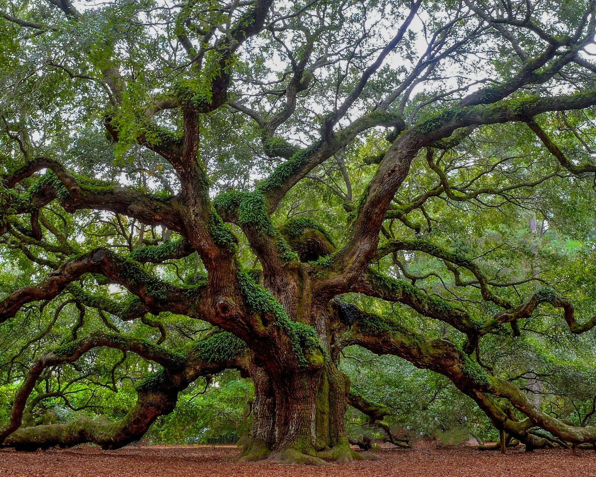

Mycorrhizal fungi connect the roots of almost 90% of plants on Earth, carrying carbon and nutrients between them. For most of our history we had no way to see any of it.
In 2021 a group called SPUN set out to map it. It took four years and 2.8 billion DNA samples from 130 countries, and in 2025 they published the result in Nature: the first detailed map of fungal life across the planet.
More than 90% of the richest sites turned out to sit outside any protected area.
Once the networks had coordinates, conservation groups could take them to governments and argue for protection, which had never really been possible for fungi before.
By 2027 three of the hotspots had protected status: the Simien Mountains in Ethiopia, the Cerrado in Brazil, and the Veluwe in the Netherlands.
Knowing where the networks were turned out to be a different thing from knowing what they were doing.
Ordinary soil sensors measure the obvious things: how wet the ground is, how warm, what's dissolved in it. None of that says much about whether the network underneath is active or under stress.
In 2024, researchers at QuTech and TU Delft tried something else. Diamond quantum sensors built for medical imaging turned out to be sensitive enough to detect the faint magnetic traces of fungal activity in soil.

It took three years to build a version that would survive being buried.
In 2027 the team put the first MycoSense node into the ground in the Veluwe, under an oak stand about four centuries old. It was sending data within three days, though it took much longer to work out what the data meant.
Some of the early signals were ambiguous. Others weren't. In 2028 a node in Drenthe registered a sharp drop in activity beneath a peat bog, months before the trees above it showed any sign of trouble.
By 2031 there were 89 nodes across three continents, enough to start picking out patterns: seasonal cycles, stress moving through a network, the occasional reading nobody could account for.
There are 500 now. They helped flag a forest collapse in Southeast Asia early enough to prevent it, and they've fed data into the latest IPCC assessment. So far they cover about a third of the known hotspots, and most of what they record still isn't well understood.
The science, organisations and reporting the MycoSense scenario is extrapolated from, so you can trace the line between fact and fiction yourself.
Underground Intelligence is a project of the Futures Atlas, by Frond Studio in partnership with the Centre for Quantum & Society, to make the futures we might live in visible, tangible, and open to debate.
Whether you’d like to collaborate, commission work, or simply share a thought or question, we’d be glad to hear from you.